Released on December 2, 2009
(Next Release on December 9, 2009)
The Changing Structure of the U.S. Refining Industry
No major new refineries have been built in the United States since the 1970s, but that does not mean that U.S. refinery capacity has not grown. Refiners can increase capacity at existing sites by modifying equipment to increase product flow and by adding new distillation units. Consequently, though U.S. crude oil distillation capacity declined in the early 1980s, it has risen since the mid-1990s (Figure 1) due to these kinds of investments. From 1997 to 2009, total U.S. refining capacity increased by 14 percent, with the average annual capacity increase of about 185 thousand barrels per day (Mbbl/d) over this period, equivalent to adding one and a half average-sized refineries each year.
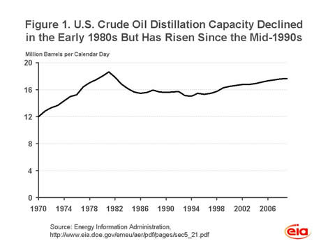
Despite the growth in refinery capacity, the number of refineries and refining companies has actually declined in recent years. The capacity of the average refinery increased from 94 Mbbl/d in 1997 to 118 Mbbl/d in 2009 (25 percent) and the average capacity per refining company rose from 196 Mbbl/d in 1997 to 310 Mbbl/d in 2009 (58 percent). Several large mergers occurred over this period, as shown in the Genealogy of Major U.S. Refiners. The second and fourth largest refiners in 1997 merged to become Exxon Mobil Corporation, and BP, the ninth largest in 1997, acquired Amoco, number three in 1997 (Table 1). But the most remarkable rise was that of Valero Energy Corporation. In 1997, Valero ranked 51st based on refining capacity with one small refinery. By 2009, Valero attained the position of the largest U.S. refiner with 14 refineries and 2 million barrels per day of capacity. The share of U.S. refining capacity for the top four companies increased from 26 percent in 1997 to 40 percent in 2009, while the top 10 share went from 51 percent to 69 percent.
| Table 1. U.S. Crude Oil Distillation Capacity | |||||
|---|---|---|---|---|---|
| Thousand barrels per calendar day | |||||
| January 1, 1997 | January 1, 2009 | ||||
| 1 | Chevron Corp. | 1,047 | Valero Energy Corp. | 2,001 | |
| 2 | Exxon Corp. | 1,017 | Exxon Mobil Corp. | 1,868 | |
| 3 | Amoco Corp. | 1,010 | ConocoPhillips | 1,787 | |
| 4 | Mobil Oil Corp. | 952 | BP plc | 1,364 | |
| 5 | Shell Oil Company | 897 | Chevron Corp. | 1,033 | |
| 6 | Sun Company, Inc. | 704 | Marathon Oil Corp. | 1,016 | |
| 7 | Star Enterprise | 605 | Sunoco, Inc. | 903 | |
| 8 | USX Corp. | 570 | Koch Industries, Inc. | 779 | |
| 9 | BP America, Inc. | 564 | PDV America, Inc. | 760 | |
| 10 | Koch Industries, Inc. | 514 | Motiva Enterprises LLC | 756 | |
| U.S. Total | 15,452 | 17,672 | |||
| Note: In November 2009, Valero announced the permanent closure of the Delaware City refinery, which, other things being equal, would make Valero the second largest refiner after Exxon Mobil. | |||||
Net refining margins and return on investment reached historic high levels from 2004 to 2007, encouraging several companies to announce expansion plans. Over the past several quarters, however, refining margins have declined sharply (Financial News for Major Energy Companies). Furthermore, petroleum product demand has declined in recent years and renewable fuels are making inroads into the market.
The past 12 years have clearly been a period of significant change in the U.S. refining industry, reflecting the evolution of both markets and policies. With continued market and policy uncertainties ahead, the structure of the refining industry is likely to keep on changing.
U.S. Average Gasoline and Diesel Prices Drop a Penny
The U.S. average price for regular gasoline slipped a penny to $2.63 per gallon, $0.82 higher than the price a year ago. Prices declined throughout the country with the East Coast dropping a fraction of a cent to $2.63 per gallon. The average prices in the Midwest, on the Gulf Coast, and in the Rocky Mountains each decreased by about a penny to settle at $2.57, $2.50, and $2.57 per gallon, respectively. The average on the West Coast slipped a cent and a half to $2.87 per gallon and the price in California dropped two cents to $2.92 per gallon.
The national average price for diesel fuel dipped a cent to $2.78 per gallon, the lowest level in over a month. The average is $0.16 per gallon higher than last year. The average prices dropped by about a penny in all five major regions. At $2.72 per gallon, the Gulf Coast continued to have the lowest average price while the highest average occurred on the West Coast at $2.89 per gallon. The average price in California was $2.95 per gallon, a drop of less than a penny from last week.
Propane Inventories Decline Again
Total U.S. inventories of propane fell last week for the seventh straight week, by 0.9 million barrels, to 62.7 million barrels. The Gulf Coast realized the largest decline of 0.9 million barrels, while the Midwest regional stocks dropped 0.8 million barrels. The East Coast regional stocks grew by 0.7 million barrels and the Rocky Mountain/West Coast inventories rose slightly. Propylene non-fuel use inventories decreased their share of total propane/propylene inventories from 3.5 percent to 3.4 percent.
Residential Propane Price Increases
Residential heating oil prices fell during the period ending November 30, 2009. The average residential heating oil price dropped 0.1 cent per gallon last week to reach 274.7 cents per gallon, an increase of 6.7 cents per gallon from the same time last year. Wholesale heating oil prices increased 0.7 cent per gallon to reach 205.5 cents per gallon, 23.1 cents per gallon higher than at this time last year.
The average residential propane price increased 1.6 cents per gallon to reach 228.9 cents per gallon. This was a decrease of 11.2 cents per gallon compared to the 240.1 cents per gallon average from the same period last year. Wholesale propane prices gained 2.7 cents per gallon, from 120.1 cents per gallon to 122.8 cents per gallon. This was an increase of 36.9 cents per gallon when compared to the December 1, 2008 price of 85.9 cents per gallon.
Text from the previous editions of “This Week In Petroleum” is now accessible through a link at the top right-hand corner of this page.
| Retail Prices (Cents Per Gallon) | |||||||
| 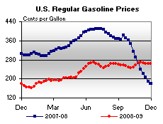 | 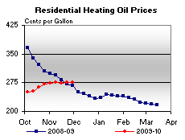 | ||||||
| 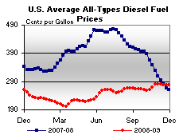 | 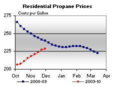 | ||||||
| Retail Data | Changes From | Retail Data | Changes From | ||||
| 11/30/09 | Week | Year | 11/30/09 | Week | Year | ||
| Gasoline | 262.9 | Heating Oil | 274.7 | ||||
| Diesel Fuel | 277.5 | Propane | 228.9 | ||||
| Spot Prices (Cents Per Gallon*) | |||||||||||||||||||||||||||||||||||
| 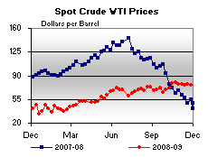 | 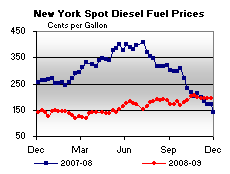 | ||||||||||||||||||||||||||||||||||
| 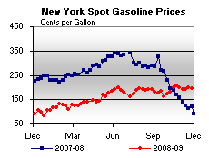 | 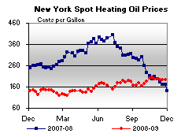 | ||||||||||||||||||||||||||||||||||
|
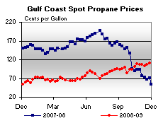 | ||||||||||||||||||||||||||||||||||
| *Note: Crude Oil WTI Price in Dollars per Barrel. | |||||||||||||||||||||||||||||||||||
| Stocks (Million Barrels) | |||||||
| 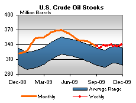 | 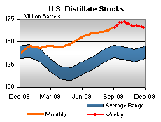 | ||||||
| 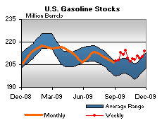 | 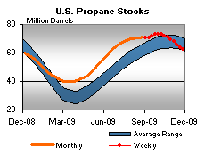 | ||||||
| Stocks Data | Changes From | Stocks Data | Changes From | ||||
| 11/27/09 | Week | Year | 11/27/09 | Week | Year | ||
| Crude Oil | 339.9 | Distillate | 165.7 | ||||
| Gasoline | 214.1 | Propane | 62.711 | ||||